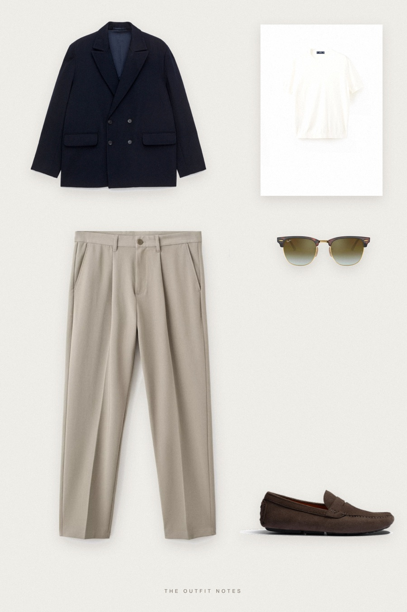

Paris Ecru
blazer, tee and nothing else

Smart casual men's outfit with a quiet luxury feel: an ARKET navy double-breasted wool blazer over a fine-knit ecru Mango tee, mink-grey pleated trousers, dark brown suede J.M. Weston driving loafers and Ray-Ban Clubmaster sunglasses. A relaxed old money outfit for men, made for city weekends in Paris.
The pieces
This page contains affiliate links: if you buy through them, we may earn a commission at no extra cost to you. Disclosure.
 ARKET
ARKET
Navy double-breasted blazer
Shop Mango
Mango
Ecru fine-knit crew-neck tee
Shop Mango
Mango
Mink-grey pleated straight trousers
Shop![J.M. Weston Mocassin de conduite Drive-On [homme cuir veau velours marron foncé]](../../img/products/jm-weston-drive-on-velours-marron-fonce.jpg) J.M. Weston
J.M. Weston
Dark-brown suede loafers
Shop Ray-Ban
Ray-Ban
Havana clubmaster sunglasses
Shop
Prices are indicative, taken when the look was published, and may have changed. Pictures of the outfit are AI-generated illustrations of real products; the product photos are the retailers' own.
Published 1 October 2026.